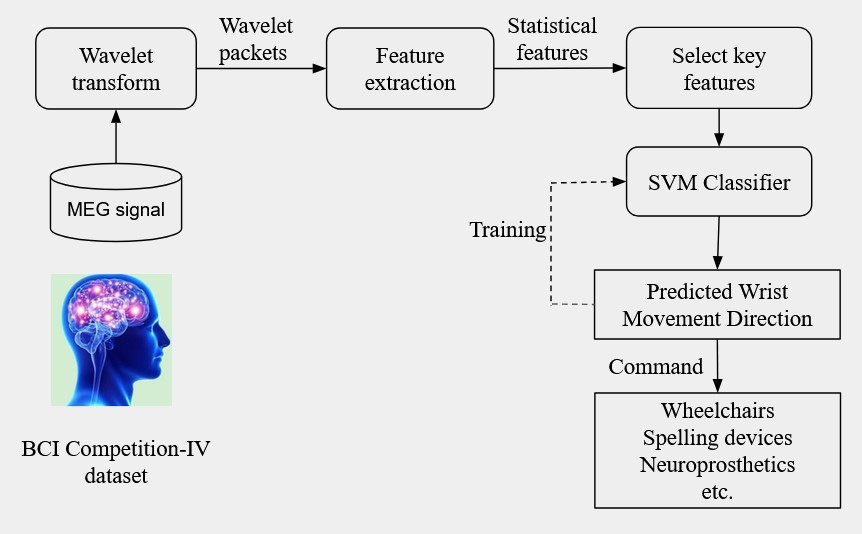

MS in Biomedical Engineering
Driven by a keen interest in digital signal processing and cognitive engineering, with a focus on healthcare applications. Experienced in analyzing physiological signals such as MEG/EEG, eye tracking, and voice data. Prior to pursuing my MS at IIT Madras, I completed a B-Tech in Electrical Engineering from Aligarh Muslim University. Outside of work, I enjoy traveling, running, cycling, and maintaining a healthy lifestyle.
Education
M.S in Biomedical Engineering
CGPA: 8.11/10
Duration: July 2022 - January 2025
B-Tech in Electrical Engineering
CGPA: 9.2/10
Duration: June 2014 - June 2018
Projects
Feature Extraction and Classification of Brain Signals for Brain-Computer Interface Applications
Brain-Computer Interface
Feature Extraction
Machine Learning
Python
MATLAB
This project focused on analyzing and classifying brain signals recorded using Magnetoencephalography (MEG) to decode wrist movements for Brain-Computer Interface (BCI) applications. Using data from Dataset 3 of BCI Competition IV, we preprocessed MEG signals, extracted multi-resolution statistical features through Wavelet Packet Transform (WPT) and Discrete Wavelet Transform (DWT), and selected top-performing features using Principal Component Analysis (PCA). Classification was performed using Mahalanobis distance-based and Support Vector Machine (SVM) classifiers, achieving accuracies of 72.28% for two-class and 33% for four-class wrist movement classification. The study highlights the potential of BCI systems to assist individuals with neuromuscular disorders by restoring neural communication.

Objective: The project aimed to decode wrist movements using Magnetoencephalography (MEG) signals for Brain-Computer Interface (BCI) applications. The goal was to enable assistive technologies for individuals with neuromuscular disorders, improving their ability to interact with external devices.
Methodology:
Conclusion: This project highlights the potential of using MEG signals and advanced classification techniques to improve BCI systems, contributing to assistive technology development for individuals with severe motor impairments.
Methodology:
- Data Source: MEG signals were sourced from Dataset 3 of the BCI Competition IV, recorded during wrist movements in four directions: right, left, back, and forth.
- Signal Processing: The MEG data was preprocessed to remove noise and artifacts. Multi-resolution statistical features were extracted using Wavelet Packet Transform (WPT) and Discrete Wavelet Transform (DWT).
- Feature Selection: Principal Component Analysis (PCA) was applied to rank and select the most relevant features for classification.
- Classification: Mahalanobis Distance-Based classifier was employed:
- For two-class wrist movement classification: Achieved 72.28% accuracy.
- For four-class wrist movement classification: Achieved 33% accuracy for four-class classification.
Conclusion: This project highlights the potential of using MEG signals and advanced classification techniques to improve BCI systems, contributing to assistive technology development for individuals with severe motor impairments.
An Innovative Eye tracking Technique to track eye on Large Screen Displays
Human Cognition Photogrammetry Ray Casting Python MATLAB Eye tracking is a technology used to monitor and analyze where and how a person moves their eyes. It helps researchers understand what a person is focusing on and thinking about, based on the eye-mind hypothesis, which suggests a connection between eye movements and cognitive processes like attention, perception, and decision-making.
We propose a novel methodology to analyze operators' cognitive behavior in collaborative control rooms by visualizing their gaze patterns and obtaining eye-tracking metrics. Traditional eye trackers are designed to capture gaze data on calibrated displays within a limited range. However, they are often inadequate for capturing gaze data on large overview displays, mainly due to the size of these screens and the limitations of single-eye tracking systems. To address this limitation, our approach extends gaze tracking to large overview displays by leveraging the gaze vector, a standard output of eye-tracking systems
This work constitutes a significant portion of my MS thesis. However, detailed discussions are not possible at this stage as it is currently undergoing the patent filing process.
Assessing Team Performance in Control Rooms: Integrating Eye Tracking with Multimodal Data Analysis for Insights
Human Cognition Photogrammetry Ray Casting Python MATLAB Eye tracking is used to track the eye movements of human to understand the cognition of the human as per eye-mind hypothesis

Publications
[Publlished]
[Publlished]
Skills
Programming Languages: Python, MATLAB, Basic C
Area Of Interest:Digital signal Processing, Computer Vision, DL/ML, Human-computer Interaction, VR/3D modeling
Toolkits & software: Pytorch, TensorFlow, Scikit-Learn, PyVista, NumPy, Pandas, Blender, Autodesk’s Recap pro, Unreal Engine
Examinations
Qualified CSE Prelims in 2019 and 2020
Graduate Aptitude Test in Engineering (GATE)
Electrical Engineering
Contact